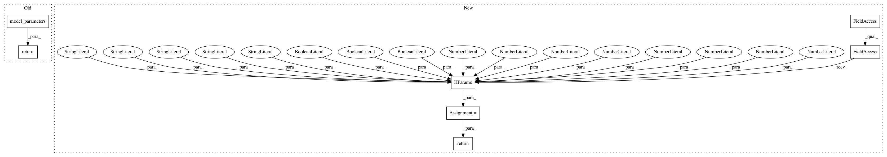

051bd416d3c41002f6d58b9dd71516a27243d178,thumt/models/transformer.py,Transformer,get_parameters,#,326
Before Change
@staticmethod
def get_parameters():
return model_parameters()
After Change
@staticmethod
def get_parameters():
params = tf.contrib.training.HParams(
pad="<pad>",
bos="<eos>",
eos="<eos>",
unk="<unk>",
append_eos=False,
hidden_size=512,
filter_size=2048,
num_heads=8,
num_encoder_layers=6,
num_decoder_layers=6,
attention_dropout=0.0,
residual_dropout=0.1,
relu_dropout=0.0,
label_smoothing=0.1,
attention_key_channels=0,
attention_value_channels=0,
multiply_embedding_mode="sqrt_depth",
shared_embedding_and_softmax_weights=False,
shared_source_target_embedding=False,
// Override default parameters
learning_rate_decay="noam",
initializer="uniform_unit_scaling",
initializer_gain=1.0,
learning_rate=1.0,
layer_preprocess="none",
layer_postprocess="layer_norm",
batch_size=4096,
constant_batch_size=False,
adam_beta1=0.9,
adam_beta2=0.98,
adam_epsilon=1e-9,
clip_grad_norm=0.0
)
return params
In pattern: SUPERPATTERN
Frequency: 3
Non-data size: 7
Instances
Project Name: THUNLP-MT/THUMT
Commit Name: 051bd416d3c41002f6d58b9dd71516a27243d178
Time: 2017-11-11
Author: playinf@stu.xmu.edu.cn
File Name: thumt/models/transformer.py
Class Name: Transformer
Method Name: get_parameters
Project Name: THUNLP-MT/THUMT
Commit Name: 051bd416d3c41002f6d58b9dd71516a27243d178
Time: 2017-11-11
Author: playinf@stu.xmu.edu.cn
File Name: thumt/models/seq2seq.py
Class Name: Seq2Seq
Method Name: get_parameters
Project Name: THUNLP-MT/THUMT
Commit Name: 051bd416d3c41002f6d58b9dd71516a27243d178
Time: 2017-11-11
Author: playinf@stu.xmu.edu.cn
File Name: thumt/models/rnnsearch.py
Class Name: RNNsearch
Method Name: get_parameters